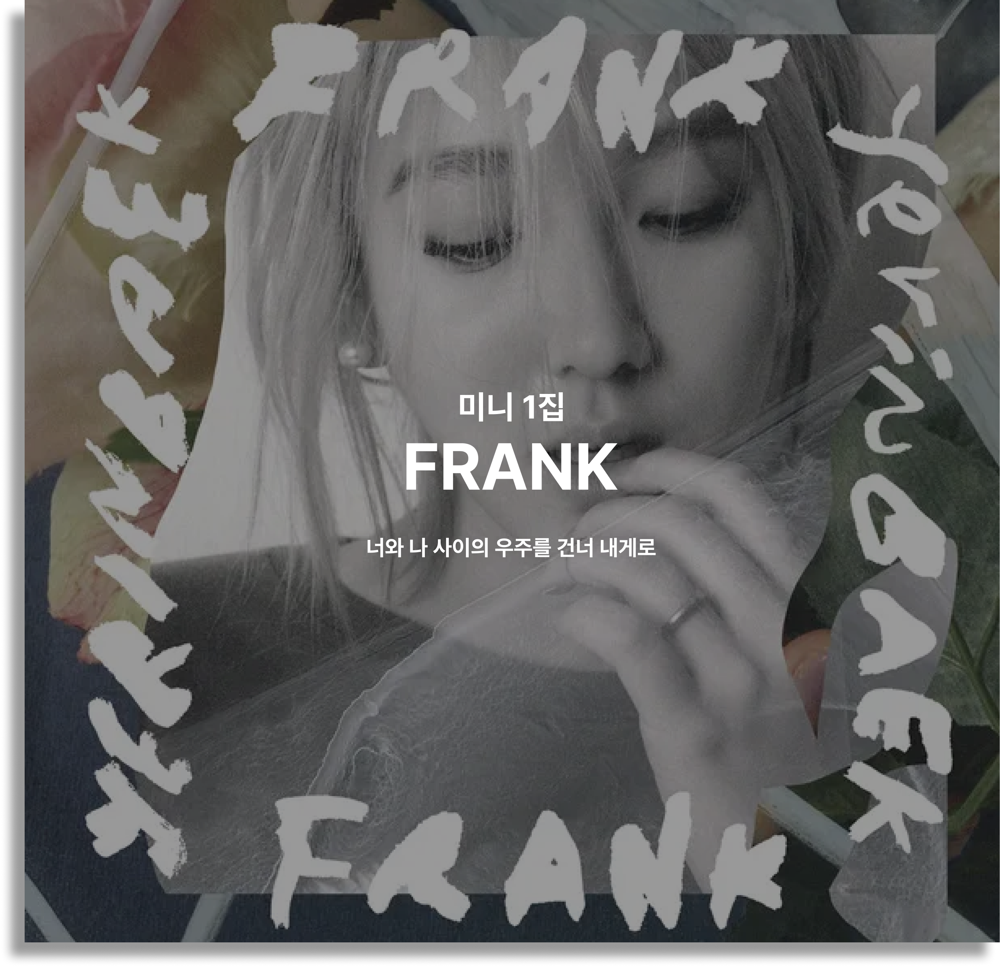
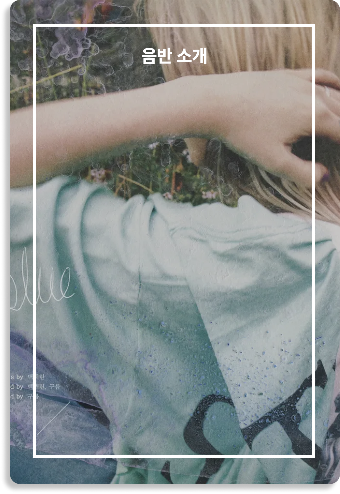
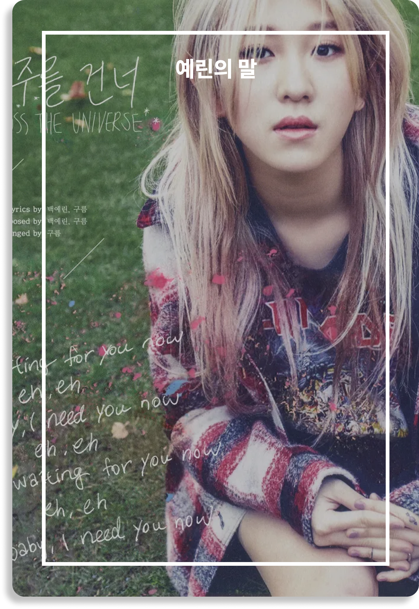
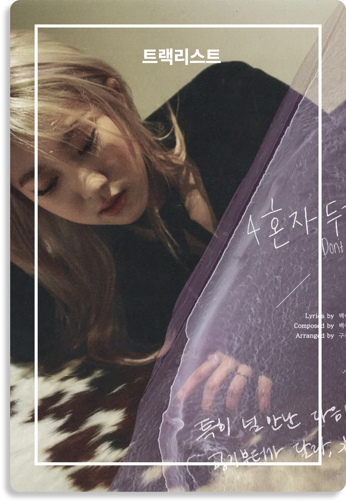
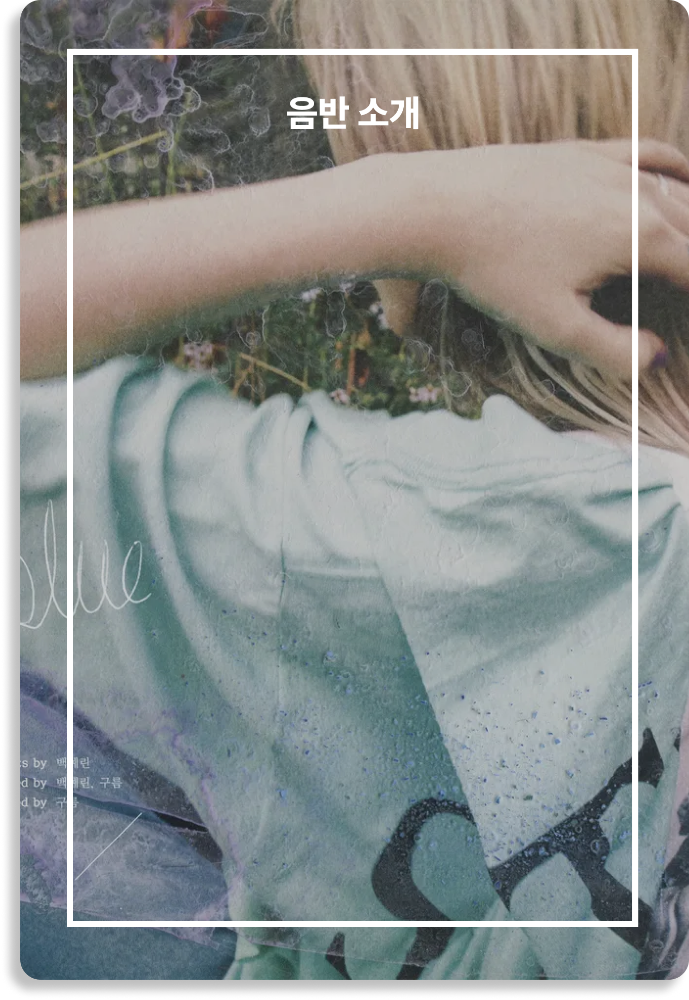
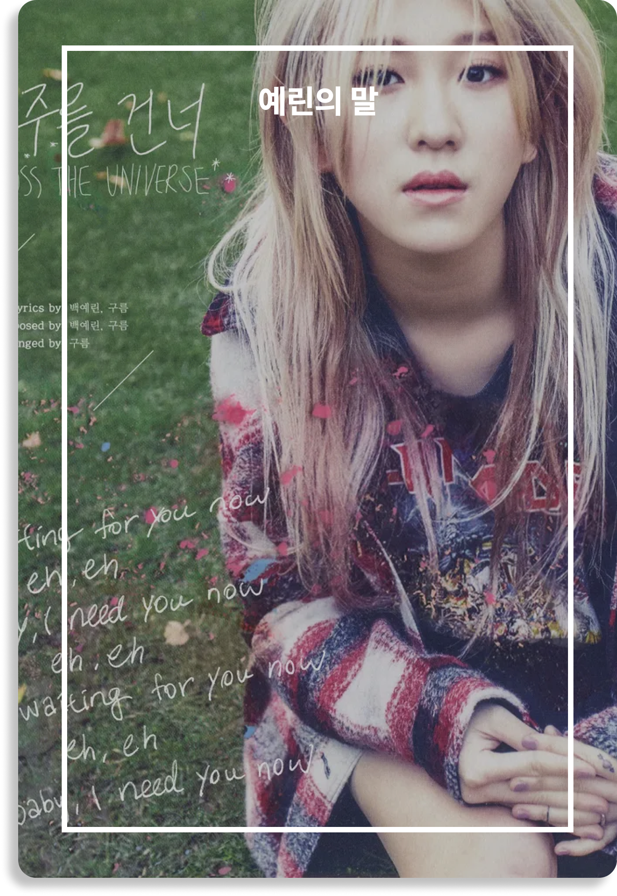
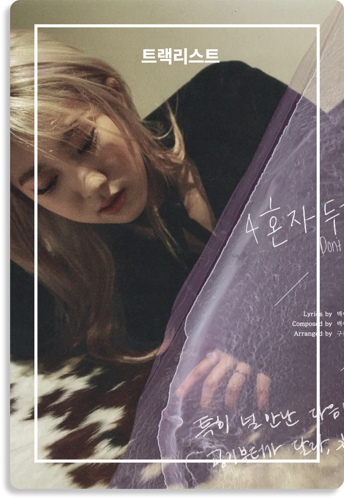

  
  
VINYL FRANK
백예린이 11월 30일 첫 번째 솔로 앨범 'FRANK'를 발표했다. 2012년
박지민과 함께 '15&'로 데뷔한 백예린은 어린 나이임에도 불구하고 뛰어난
가창력과 감정 표현으로 '믿고 듣는 가수'라는 수식어를 거머쥐었다. 솔로
앨범 'FRANK'에서는 전곡 작사-작곡에 참여하며, 차세대
싱어송라이터로서의 가능성까지 드러냈다. 또한 자켓 사진과
뮤직비디오에도 자신의 감성을 담기 위해 직접 콘셉트를 구상하는 등 많은
공을 들였다.
솔로 앨범의 제목인 'FRANK'에는 ‘숨김 없는’
‘솔직한’이란 뜻이 담겨있다. 백예린은 이에 걸맞게 투명하고 진솔한
자신의 이야기를 음악으로 풀어냈다. 메모장에 적어 놓은 문구, 과거의
기억과 현재의 나에 대한 생각의 조각을 맞추며 써 내려간 가사를 통해
백예린을 둘러싸고 있는 세상을 그려냈다. 'FRANK'는 열아홉 소녀 백예린의
마음 속에 담긴 우주는 어떤 빛깔인지 엿볼 수 있는 앨범이 될 것이다.
타이틀곡
'우주를 건너'는 백예린과 프로듀서 '구름'이 함께 작업한 곡이다.
'우주'라는 공간이 가지고 있는 신비로우면서도 공허한 느낌을 음악으로
표현했다. 과학만으로는 전부 설명할 수 없는 우주와 말로는 다 표현할 수
없는 사람의 감정 사이에서 공통점을 찾아, 전에 없던 독특한 감성의 곡을
완성했다. 백예린은 일차원적인 사랑과 이별을 넘어, 너와 나의 공간
그리고 그 사이에 존재하는 미묘함에 대해 노래한다.
Q. 앨범명을 [FRANK]로 정한 이유가 무엇인가요?"FRANK"라는 단어에는 "숨김없는, 솔직한" 등의 의미가 담겨 있는데요. 제
첫 솔로 앨범인 만큼, 가장 솔직하고, 자연스럽고, 저답게 앨범을 만드는
것이 저의 목표였습니다. 제가 가지고 있는 다양한 모습들 중 몇 가지를
이번 앨범에 아주 투명하고, 저답게 녹여낸 것 같아서 앨범명을 ‘FRANK’로
정하게 되었습니다!
Q. 전곡 작사-작곡 및 프로듀싱에 참여하였다고 하던데, 어떤 스토리를
앨범에 담아내고자 했나요?
제가 평소 생각하던 것들, 적어두었던 것들, 과거에 있었던 일들에 대한
감정들, 변한 나의 모습, 요즘 느낀 것들 등을 멜로디와 가사로
표현해보았습니다.
Q. 타이틀곡 '우주를 건너'에 대해 조금 더 자세하게 알려주세요!
타이틀곡 '우주를 건너'는 같이 작업해준 구름 오빠가 아이디어와
송폼(song form)을 잡아주셨어요. 그걸 토대로 가사를 썼고, 설레거나
애절한 감정이라기보다는 "나"와 "너" 사이의 공간, 그리고 미묘한 감정에
대해 노래했습니다! 가사 중 "너와 나 사이에 우주를 건너 내게로 would
you like to come over to me"라는 가사가 있는데요. "너"가 있는 어느
행성에선 시간이 엄청 빠르게 가는 반면, "나"가 있는 어느 곳에선 똑같은
시간이지만 엄청 느리게 흘러가는 것을 감정으로 표현하려고
노력했습니다.
Q. [FRANK]에서 가장 애착이 가는 곡은 무엇인가요?저는 사실 이번 앨범의 메인 테마는 6번 트랙 'That's Why'라는 생각이
들어요. 이 곡은 엄청 간단한 말들과 창법으로 가장 마음에 깊이 들어오는
가사이고, 또 가이드 해놓았던걸 거의 그대로 썼어요. 기교 하나 없이
자연스럽고 편하게 불러서인지 부를 때마다 마음이 편해지기도 하고,
아려오기도 하는 곡이에요. 또 4번 트랙 '혼자 두지 마'는 제 첫
자작곡입니다! 2014년 1월부터 곡을 쓰기 시작했는데, 정말로 제가 그때
느낀 것들을 다 쓴 곡이기도 해요. 아주 사소하지만, 자주 날 혼자
내버려두는 사람을 곁에 두신 분들은 특히나 공감을 해주실 것 같아요.
(하하)
Q. 마지막으로 [FRANK] 앨범을 들으시는 분들께 드릴 Tip 하나만
알려주세요!
곡들마다 구성 악기, 스타일이 모두 다르니 우선 천천히 전곡을 들어주시면
감사하겠습니다! (하하) 그리고 다시 첫 트랙으로 돌아가 악기 소리
하나하나에 집중해서 들어보시면 또 한번 더 재밌게 들으실 수 있을 것
같습니다!
1. Blue
작사: 백예린 / 작곡: 백예린, 구름 / 편곡: 구름
백예린의
첫 번째 솔로 앨범 'FRANK'의 포문을 여는 곡. 백예린의 매력적인 음색과
시원한 코러스, 기타 연주가 돋보인다. ‘뻔한 가사처럼 버스 창가에 기대어
잘 생각도 나지 않는 가사를 끄적이고’와 같은 노랫말을 듣고 있으면
한편의 영화가 전개되는 듯한 착각에 빠진다.
2. 우주를
건너
작사, 작곡: 백예린, 구름 / 편곡: 구름
'FRANK'의
타이틀곡으로 가사의 감정과 악기 연주가 절묘한 조화를 이룬다. 백예린은
이 곡을 통해 사람과 사람 사이의 공간과 그 공간이 갖고 있는 독특한
느낌을 음악으로 표현하기 위해 노력했다. 보컬적으로도 쓸쓸함을 담아내는
데 가장 많은 공을 들였다.
3. As I am
작사, 작곡:
백예린 / 편곡: 구름
어쿠스틱 기타와 퍼커션이 중심이 돼 끌어가는
곡이다. 담담한 목소리로 귀를 사로잡는 백예린의 매력을 느낄 수 있다.
4.
혼자 두지 마
작사, 작곡: 백예린 / 편곡: 구름
오르간 연주와 백예린의
목소리만으로 가득 차는 발라드 곡. 백예린의 목소리가 가장 잘 들릴 수
있게 편곡은 미니멀하게 구성했다. 2014년부터 작곡을 시작한 백예린이
처음으로 완성한 자작곡이란 점에서 의미가 남다르다.
5.
잠들고 싶어(zZ)
작사: 백예린 / 작곡: 백예린, 구름 / 편곡: 구름
깔끔한 스윙 리듬과
클라리넷, 플루트 등 다채로운 악기 연주가 어우러진 곡이다. 억지로
만들어낸 멋있는 말, 그럴싸한 표현을 붙이기 보다는 평소의 말투와 생각을
담기 위해 노력했다는 백예린의 말처럼 굉장히 일상적이지만 공감을
불러일으키는 노랫말이 인상적이다.
6. That’s Why
작사,
작곡: 백예린 / 편곡: 구름
타이틀곡 ‘우주를 건너’와 더불어 이번
앨범의 감성을 가장 잘 표현한 곡. 기교를 빼고 읊조리듯 노래하는
백예린의 목소리를 듣고 있으면 마음이 편안해지는 느낌이다.